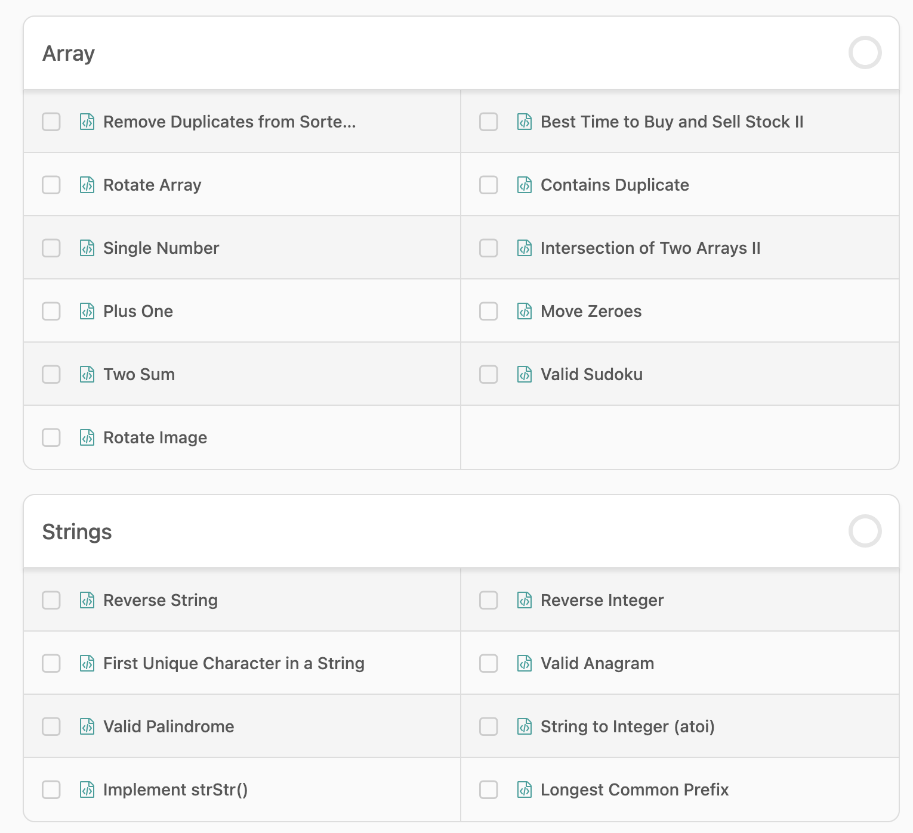
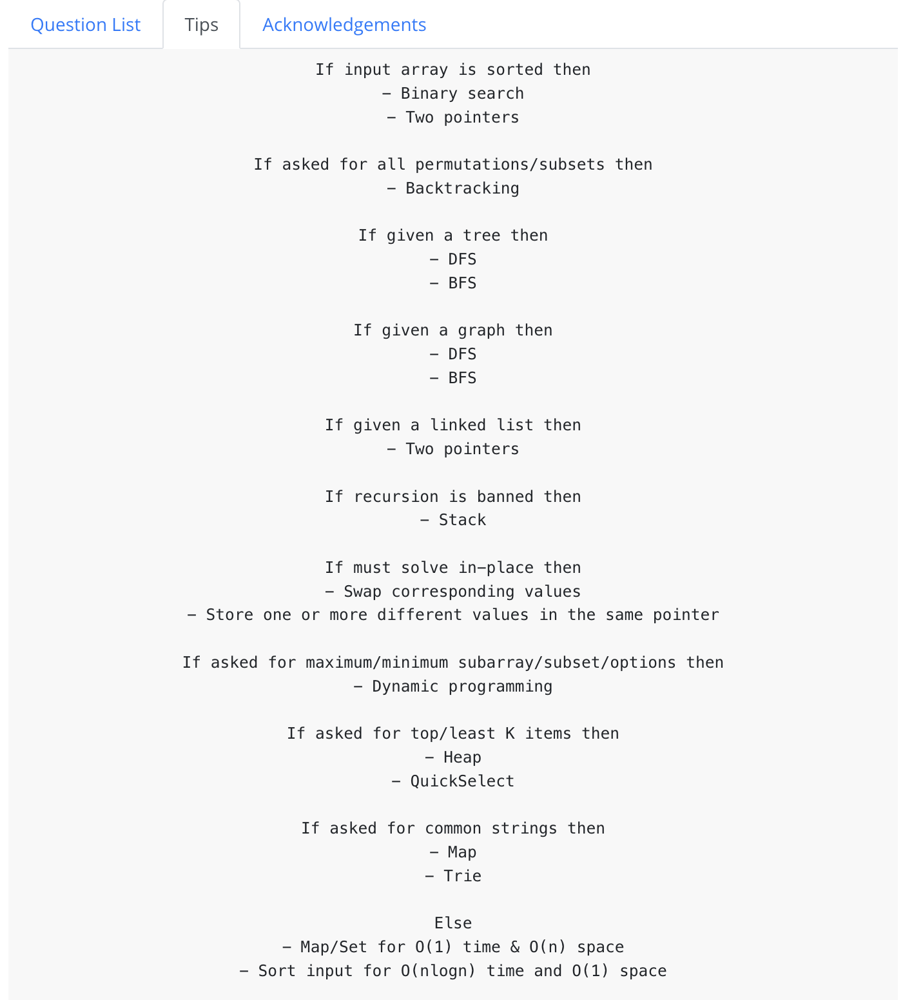

Geared towards intermediate level. Content I can personally vouch for. I will keep improving it.
Why to Study? Find your WHY?
Before diving into the technical content, it's crucial to understand your motivation. Why do you want to learn computer science? Is it for a career change, intellectual curiosity, or to build something amazing? Your "why" will fuel you through the challenging parts.
HOW to Study?
Massive amount of material, don't try to rush through it, pick what is important right now.
- Learn by doing
- Be Curious. Chat with AI.
- Specifics of HOW don’t Matter? Only What and WHY matters!!! - so read accordingly.
- Reading is faster than watching. Doing is faster than reading.
Use this website to pirate all .epub for any book and then read on your kindle: Anna's Archive
Use this website to send books to your kindle: Send to Kindle
If you are not able to access any Medium articles in this plan: Freedium or Archive.ph
When done with everything - Just randomly open - roadmap.sh/computer-science - start reading.
What to Study?
Computer Science fundamentals can be broken down into the following: Teach Yourself CS (Amazing Resource)
| Topics | Importance | Beginner | Intermediate |
|---|---|---|---|
| Databases | Very Important | I assume you know most about this, compared to other topics, we will dive into this last. Practical Projects. |
Decent Knowledge - Need Depth |
| Data Structure and Algorithm / Core Programming | Important | Beginners are below average at this. Leet code + Neet code. |
Above average - Need Mastery |
| Computer Architecture | Rarely need it for most careers, very hardware machine level specific knowledge | ❌ | Recommended |
| Operating Systems | Very Important | Beginners are below average in this. Use the terminal + Linux. |
Recommended |
| Computer Networks + Cloud | Very Important | You have ZERO knowledge. Read + Observe. |
Recommended |
| Language of compilers | Don't need it for most careers, very machine level specific knowledge | ❌ | Recommended |
| Distributed Systems | Important | Beginners lack basic knowledge. Need operating system knowledge as pre-req. |
Very Recommended |
| Cryptography | Important | Beginners lack basic knowledge. | Very Recommended |
| System Design | Very Important | Beginners lack basic knowledge. | Very Recommended |
| App + Web + Server Programming | Average Importance | ❌ | Most people start here. Not the best approach. |
| AI + Machine Learning | Average Importance | ❌ | Most people understand applied AI, need more depth. |
Computer Networks + Cloud
WATCH THIS - How does the internet work? - YouTube Video
History and Fundamentals
- History of the internet: Medium Article
- Some more: Science and Media Museum
- More technical history: Technical History
URLs and Domains
- What is a URL?: URL Structure
- More URL: Demystifying URL
- What is a Domain?: Domain Names
- More Advanced Domain Config (Not needed for SANS): DNS in Detail
- Advance Domain concepts (Not needed for SANS): DNS Guide
Networking Basics
- Basics of Networking (Talk with AI about each topic): Networking Basics
- Core Networking basics (Talk with AI about each topic): Networking 101
OSI Model
Everything in Networking is a part of OSI Model:
- The OSI Model Brief (Ask the AI, why we need OSI?): OSI Layers Explained
- OSI Model in Depth: All 7 Layers
- Intuition behind OSI model: Reddit Discussion
Networking Protocols
- Networking Protocols Intro: Network Protocols
- Networking Protocols Basics: Comprehensive Guide
- A bit more on Networking Protocols: Top 8 Protocols
TCP/IP and UDP
- In-depth of TCP/IP and UDP: TCP and UDP
- Some more on TCP/IP: TCP/IP Model
HTTP and HTTPS
- What is HTTP and HTTPs: HTTP vs HTTPS
- More on HTTP and HTTPS and SSL: SSL Explained
- HTTP Status Codes: Status Codes
APIs
- What is an API: API Types and Protocols
- More on API: Beginner's Guide
- What is Restful API: REST API
- More details: RESTful API Details
- More: API Best Practices
- Basic intro to GRPC vs REST: GRPC vs REST
- GRPC vs Rest: Comprehensive Comparison
- Some more on GrPC vs Rest: REST vs GRPC
Cookies, Sessions and SSH
- What is Cookies and Sessions: Session and Cookie
- Intro to SSH: SSH Introduction
- More on SSH: SSH for Safe Communication
- Fingerprinting with SSH (used in github): SSH Protocol
- Exercise here could be setup of Github
Exercise
- Download and use Wireshark - and analyze network traffic - Wireshark
In-Depth Reading
Networking for Dummies: PDF Link
Amazon Kindle: Anna's Archive
What to Read:
- Chapter 1 - Let's Network
- Chapter 5 - Dealing with TCP/IP - Page 69 - to Page 86
- Chapter 6 - Oh, What a Tangled Web We Weave: Cables, Switches, and Routers - Page 95 - Page 112
- Chapter 9 - Setting Up a Wireless Network - Page 131 - Page 150
- Chapter 10 - Virtual Networking - Page 151 - Page 159
- Chapter 20 - Hardening your Network
- Chapter 21 - Network Performance Anxiety
- Chapter 22 - Life in cloud city
- Chapter 24 - Connecting from Home
Cloud
This will all be hands on exercise - cloud is not different from networking fundamentals, just someone else's computer.
Operating Systems
Basic Introduction
- Basic intro to Operating System: OS Basics
- Balanced intro to Operating Systems: Complete Guide to OS
- More in-depth intro to operating systems: 10 OS Concepts
- More aggressive intro to operating system: OS Introduction
Process and Thread Management
Creating and managing execution contexts
Context Switching
Rapidly switching between running processes
CPU Scheduling
Determining which process runs when
Memory Management
Organizing and protecting system memory
Virtual Memory
Creating the illusion of unlimited memory
File Systems
Organizing and storing persistent data
Synchronization
Coordinating access to shared resources
Deadlocks
Preventing and resolving resource conflicts
Interrupt Handling
Managing hardware events efficiently
System Calls
Providing controlled access to kernel services
Boot Process
Initializing the system from power-on
Kernel Architectures
Different approaches to OS design
Linux and Terminal
- Get familiar with the terminal (Force yourself to use the terminal for most things): Command Line for Beginners
- Linux basic: Introduction to Linux
- Linux Survival Guide: Linux Survival Guide
- Linux System CTL (NOT NEEDED FOR SANS): Linux systemctl
System Design
Pre-requisite - Networking + OS + DSA
Just follow this: Complete System Design Roadmap
This is your guy - watch these videos in free time or before interviews - Gaurav Sen YouTube
Caching
Data Structure and Algorithm / Core Programming
To start with - solve these questions:
After that
You need to solve these topic by topic (ONLY EASY and MEDIUM - do not do HARD): NeetCode Roadmap
All you need to do is pick up a problem and then learn the concept behind solving that problem. For the first problem in a new topic watch the video, and then do the others on your own.
Here is some theory behind patterns (Talk with AI - in depth): 15 LeetCode Patterns
Once done - you can solve these: LeetCode Problem List
Do not even attempt to do anything outside the above two links.
If you are stuck there are video solutions:
Time complexity cheat sheet - Big O Cheat Sheet
Cryptography
There are going to be a lot of jargon - don't be scared.
Hashing
- What is a HASH/CHECKSUM: Introduction to Hashing
- Types of Hash: Hashing Types
SHA-256 Deep Dive
- Details of SHA-256 (Not required for SANS): SHA-256 Under the Hood
- Some more on SHA-256 (Not required for SANS): Breaking Down SHA-256
- Some more on SHA-256 (Not required for SANS): Cryptography SHA-256
- Visualization of SHA-256 (Not required for SANS): SHA256 Algorithm - Visualizing Algorithms
- Some more on SHA: How SHA-2 Works
- How secure is SHA-256: YouTube Video
Caesar Cipher
- Simple Caesar Cipher: Caesar Cipher
- Some more Caesar Cipher: Caesar Cipher Adventures
Cryptography Basics
- Very basic of cryptography: What is Cryptography
- Primer on Cryptography: Cryptography Primer
RSA
- RSA: Understanding RSA
- More technical intro to RSA: Explaining RSA
- More RSA: RSA Algorithm
Authentication & Authorization
- Authentication & Authorization: Auth Methods
- What is Auth
JWT Auth Tokens
- JWT Auth Tokens: Understanding JWT
- All About JWT
- JWT Secure Approach
Exercises
- Understand how bitcoin uses cryptography: Bitcoin Cryptography
- So How does bitcoin actually work: How Bitcoin Works
- Why Quantum computing will break Encryption: Quantum vs Encryption
AI and Machine Learning
Great Resources
- Welch Labs: Welch Labs YouTube
- Leios Labs: Leios Labs YouTube
- Think Twice: Think Twice YouTube
- 3Blue1Brown: 3Blue1Brown YouTube
Neural Nets Watch List - Welch Labs
- Neural Networks Part 1
- Neural Networks Part 2
- Neural Networks Part 3
- Neural Networks Part 4
- Neural Networks Part 5
- Neural Networks Part 6
- Neural Networks Part 7
Interesting Videos
- Interesting ML Video 1
- Interesting ML Video 2
- Interesting ML Video 3
- Interesting ML Video 4
- Interesting ML Video 5
- Interesting ML Video 6
- Interesting ML Video 7
Deep Learning - LLM - Neural Nets
- What is Neural Network: Neural Networks Explained
- Gradient Descent - Learning Algorithms: Gradient Descent
- Back Propagation: Backpropagation Part 1
- Back Propagation Part 2: Backpropagation Part 2
- Transformers: Transformers Explained
- Attention: Attention Mechanism 1
- Attention: Attention Mechanism 2
- LLM internals: LLM Internals
Visualizing LLMs: Interactive LLM Visualization
Attention is all you Need üëë: Original Paper
Chris Manning Lectures: Stanford NLP Lectures
Andrej Karpathy ü§¥üèª: Andrej Karpathy YouTube
Reinforcement Learning
- Great intro blog to Reinforcement Learning: RL Guide
- DeepMind - Conceptual/Theory intro to reinforcement learning: DeepMind RL Course
- Course on Reinforcement Learning: Berkeley RL Course
Extra - Ilya Sutskever talks: Ilya Sutskever Playlist
Diffusion Models
The Breakthrough Behind Modern AI Image Generators: Diffusion Models Explained
Fourier Transform
- Fourier Basics: Fourier Transform Basics
- Uncertainty in Fourier Transform: Fourier Uncertainty
Good luck on your learning journey! And remember - we're in this together.